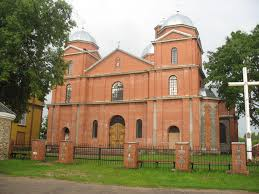

Kārsava
Kārsava - robežpilsēta starp rietumiem un austrumiem, kuras attīstību ir ietekmējusi atrašanās starptautisku ceļu krustpunktā. Kārsavas rašanās uz pasaules kartes nav iedomājama bez Malnavas muižas un grāfu Šadursku rosības šajā apkaimē un attīstītas muižu sistēmas. Izšķirošu impulsu Kārsavas attīstībai par saimnieciski rosīgu miestu deva 1763. gadā uzceltā katoļu baznīca. Atrazdamās pie noslogota pasta ceļa starp Rēzekni un Ostrovu, vēlāk pie Krievijas impērijai stratēģiski nozīmīgās Sanktpēterburgas- Varšavas dzelzceļa maģistrāles, Kārsava izveidojās par tirdzniecības centru. 1860. gadā uzbūvēta Kārsavas dzelzceļa stacija, kuras dažas ēkas ir saglabājušās un arī mūsdienās var apskatīt Latvijā vecāko dzelzceļa staciju. Stacijā pieturēja starptautiskais ekspresvilciens NordExpress (“Ziemeļu ekspresis”), kas savienoja Parīzi/Londonu ar Berlīni un tālāk ar Pēterburgu/Rīgu, pēc Pirmā pasaules kara ar Rīgu/Varšavu, bet pēc Otrā pasaules kara tas kursēja uz Kopenhāgenu. Kārsavai ir jau 200 gadus senas tirgus tradīcijas un joprojām katra mēneša trešajā svētdienā norit aktīva tirgošanās visā Telegrāfa ielas garumā. Ne mazsvarīgs ir fakts, ka Kārsava ir latgaliskākā pilsēta Latvijā:
- latgaliešu valoda skan ikdienā, cilvēkos jūtams latgaliskais spīts un izturība,
- Kārsavas ielās redzamas norādes latgaliešu rakstu valodā,
- katrs viesis būs meilai gaideits Kuorsovā.
Kārsava

Apskatīt arī video
šeit